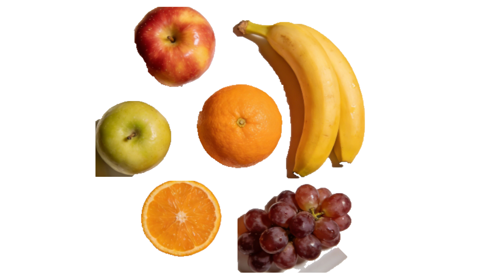

Segmentation System Documentation
Introduction
This project implements a flexible image segmentation system that supports multiple segmentation algorithms through a plugin-style architecture. It provides a complete pipeline for extracting foreground objects from images with transparent background output, supporting both manual ROI selection and API-driven batch processing. The system is designed with extensibility in mind, allowing new segmentation algorithms to be added with minimal code changes.
Main Features
Pluggable algorithm architecture – Abstract base class allows easy addition of new segmentation algorithms
GrabCut implementation – Built-in GrabCut algorithm with optimizations(image scaling, morphological post-processing, white background filtering)
Batch processing – Process multiple ROIs in a single image with progress tracking
Flexible ROI selection – Support for default ROI, custom ROI, or manual user drawing
Transparent background output – Results saved as BGRA format with alpha channel
Result composition – Combine multiple segmented foregrounds into a single transparent canvas
Comprehensive logging – Step-by-step debug information with timing statistics
Configuration management – Centralized settings via settings.hpp with optional config file support
Factory pattern – Algorithm registration and creation via AlgorithmFactory
Cross-platform support – Works on Windows, Linux, and macOS via OpenCV
Quick Start
# Install dependencies
conan install .
# Build the project
conan build .
# Create the package
conan create .
Applying results
The following illustration shows face detection results:
{kind=link}

Figure 1 Image segmentation example
The user first draws one or more rectangles around the objects to be segmented. Each green rectangle defines the region of interest (ROI) that contains the target foreground object.
Usage Example
#include "segmentation_app.hpp"
#include "grabcut_algorithm.hpp"
int main() {
// Register algorithm (required before use)
registerGrabCutAlgorithm();
// Create and run application
SegmentationApp app;
app.run();
return 0;
}
Usage demonstration
The face detection function processes an input image and returns detected face regions. It automatically loads the specified cascade model and applies detection with configurable parameters.
#include "segmentation_app.hpp"
#include "settings.hpp"
int main() {
// Configure via settings
appSettings.dataDir = "./test_data";
appSettings.outputDir = "./results";
appSettings.grabcutIterations = 7;
appSettings.useDefaultROI = false;
// Run application
SegmentationApp app;
app.run();
return 0;
}
Project Structure
face-detection/
├── include/ # Header files
│ ├── algorithm_factory.hpp
│ ├── batch_segmentation.hpp
│ ├── grabcut_algorithm.hpp
│ ├── imageutils.hpp
│ ├── logger.hpp
│ ├── segmentation_algorithm.hpp
│ ├── segmentation_app.hpp
│ ├── segmentation_result.hpp
│ └── settings.hpp
├── src/ # Source files
│ ├── batch_segmentation.cpp
│ ├── grabcut_algorithm.cpp
│ ├── imageutils.cpp
│ └── segmentation_app.cpp
├── test_package/ # Testing package
├── docs/ # Documentation
├── CMakeLists.txt # CMake build configuration
├── conanfile.py # Conan package configuration
├── metadata.json # Project metadata
└── LICENSE # License file
Theories or introduction
GrabCut Algorithm
GrabCut is an interactive foreground extraction algorithm that requires only a bounding box around the object of interest. The algorithm:
Initialization: The user-provided rectangle defines the initial trimap (background, possible foreground, certain foreground)
Gaussian Mixture Models (GMMs): Separate GMMs model foreground and background colors
Graph Cut: A min-cut algorithm segments the image by minimizing an energy function
Iterative Refinement: The GMMs and graph cut are iteratively updated for better results
Optimizations in This Implementation
Image Scaling: Images larger than 800 pixels are scaled down to improve performance
ROI Expansion: ROI is expanded by 25 pixels to include background context
Morphological Post-processing: Closing and opening operations remove small holes and smooth edges
White Background Filtering: HSV-based filtering removes white/light-colored background areas
Connected Component Analysis: Isolated small regions (less than 0.5% of max area) are removed
Segmentation Result Format
All segmentation results are returned as BGRA imagesThis format enables:
Direct compositing with other images
Transparent background for web and graphics applications
Easy visualization with overlays
Algorithm Extension
To add a new segmentation algorithm:
Inherit from ISegmentationAlgorithm
Implement segment() and getInfo() methods
Register with AlgorithmFactory::registerAlgorithm()
class MyAlgorithm : public ISegmentationAlgorithm {
public:
cv::Mat segment(const cv::Mat& image, const cv::Rect& roi) override {
// Implementation
cv::Mat result(image.size(), CV_8UC4, cv::Scalar(0, 0, 0, 0));
return result;
}
AlgorithmInfo getInfo() const override {
return {"MyAlgorithm", "1.0", "Custom segmentation algorithm"};
}
};
// Registration in source file
void registerMyAlgorithm() {
static bool registered = []() {
AlgorithmFactory::instance().registerAlgorithm("MyAlgorithm",
[](const std::string& params) {
return std::make_unique<MyAlgorithm>();
});
return true;
}();
(void)registered;
}
License
This project is licensed under the Apache-2.0 License. See the LICENSE file for details.